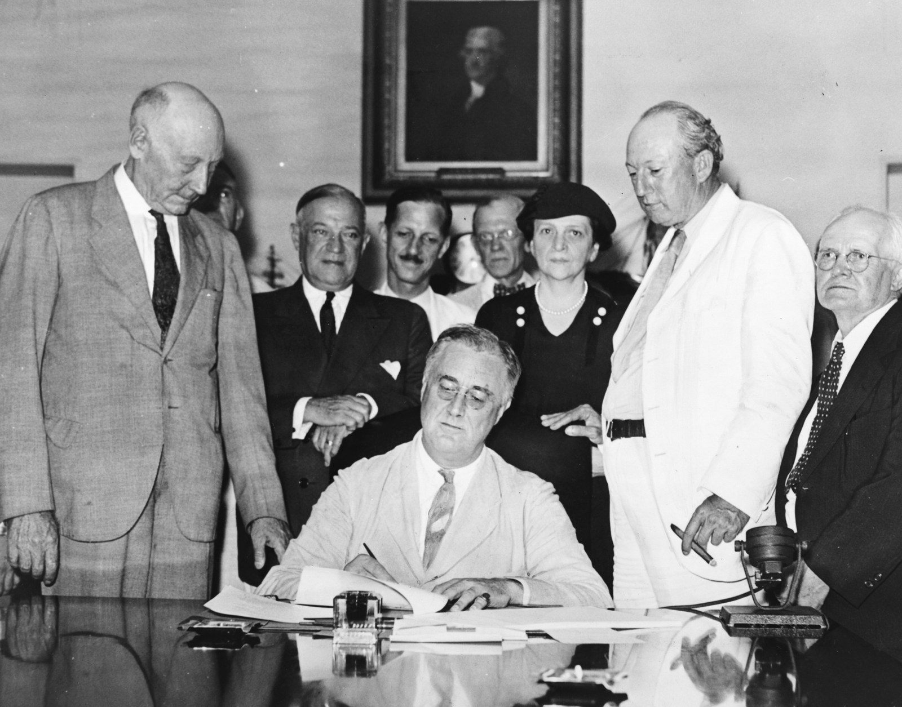

Directions: Read the full text, then answer the questions at the end.
By the end of the 1930s, the federal government touched ordinary life at points where it had barely existed ten years before. A worker's bank deposit was insured by the Federal Deposit Insurance Corporation, created in 1933, so a bank failure no longer wiped out a family's savings. The stock market answered to the Securities and Exchange Commission, created in 1934, which required companies selling stock to report their finances honestly and policed fraud. These were not emergency measures for one season. They were standing rules, run by standing agencies, and Americans planned around them: a deposit was safe because the government said so, with its own guarantee behind the promise.
The Social Security Act of 1935 built the largest piece of the new presence. Its old-age insurance paid a monthly benefit to retired workers, funded by payroll taxes, and its unemployment insurance, run with the states, paid workers between jobs. Aid went to dependent children and to other vulnerable people. Together these programs formed a safety net, the set of government programs that catch people who fall into poverty through old age, unemployment, disability, or the loss of a family earner. The net was partial, and some Americans stood outside it from the start, as this lesson will show. But the principle was permanent: falling was no longer a private event that a family met alone.

At work, the federal government now stood behind the right to organize. The Wagner Act's labor board enforced the workers' choice of a union and required employers to bargain with it, and the victories of 1937 had shown what that enforcement made possible. In June 1938 Congress passed the Fair Labor Standards Act, the last major law of the New Deal. It set a federal minimum wage, twenty-five cents an hour at the start, required overtime pay past forty hours a week, and restricted child labor. A floor now stood under wages and a limit over hours, set in Washington. Before 1933, both had been left to each state, each employer, and each worker's bargaining strength alone.
The New Deal also left a physical country. Its work programs and construction agencies raised dams on the Tennessee, Columbia, and Colorado rivers and strung power lines into farm country that private companies had not wired. They built bridges, schools, courthouses, and airports that communities used for generations, paved roads, and cut trails and lodges into national and state parks. The Tennessee Valley Authority remade a whole river region, controlling floods and selling electricity at rates private utilities then had to meet. A traveler crossing the United States in 1940 used New Deal concrete at every stage of the journey, often without knowing it. The structures outlasted the arguments about the programs that built them.
The political settlement lasted as long as the physical one. The New Deal coalition joined white southerners, northern city voters, union members, farmers, and, increasingly, Black voters in the North moving toward the Democratic Party. These groups wanted different things and sometimes opposed one another, but the party held them together by delivering something to each: farm supports, labor rights, city jobs and relief, and, for the white South, room to run its own racial order, a price this lesson will count below. The coalition kept the Democratic Party in national power for a generation after 1932, through five straight presidential elections.
Against all of this stand the limits, and they are part of the record. The Depression was not ended. Unemployment never fell below fourteen percent in any year of the 1930s, and full employment arrived only with the war spending of the 1940s. The exclusions were written into the settlement's founding laws. Social Security at the start left out agricultural and domestic workers, an exclusion that fell hardest on Black workers and on women. The CCC ran segregated camps, and relief was uneven where local officials controlled it. Federal housing officials practiced redlining, marking minority neighborhoods as risky on their maps and denying loans there. In the early Depression years, repatriation drives removed people of Mexican descent, including many United States citizens, to Mexico under local and federal pressure. The new state protected millions of Americans. It did not protect all of them, and the lines it drew were not accidents.
Judgment therefore depends on the measure used. Measured against the collapse it answered, the New Deal was relief, recovery, and reform on a scale the country had never attempted: the banking system stabilized, millions put to work, and permanent protections written into law. Measured against full recovery and equal treatment, it stopped short, and the war, not the New Deal, finished the Depression. Both measures are honest, and the argument between them is the argument Americans have had about their government ever since. The mobilization that ended mass unemployment belongs to the World War II unit, and it begins where this lesson ends.
1. Name the two financial regulators the reading describes, and state what each one does in a working family's life.
2. What did the Fair Labor Standards Act of 1938 establish? Give all three provisions from the reading.
3. Name the five groups of the New Deal coalition, and explain what held groups with opposed interests together for a generation.
4. The reading states the Depression was not ended by the New Deal. Give the unemployment evidence for that claim, and state what did end mass unemployment.
5. State the two measures of judgment from the closing section, and give one fact from the reading that each measure rests on. Answer in a short paragraph.
1. Name the two financial regulators, and state what each does in a working family's life. The Federal Deposit Insurance Corporation, created in 1933, insures bank deposits, so a family that saves in a bank no longer loses its savings when the bank fails; the government's guarantee stands behind the deposit. The Securities and Exchange Commission, created in 1934, regulates the stock markets, requiring companies that sell stock to report their finances honestly and policing fraud, so a family's investment rests on disclosed information rather than a promoter's word.
2. What did the Fair Labor Standards Act of 1938 establish? All three provisions: a federal minimum wage, twenty-five cents an hour at the start; overtime pay required past forty hours a week; and restrictions on child labor. Students should also be able to say why it counts as legacy: it was the last major New Deal law, and its floor under wages and limit over hours were set nationally and permanently.
3. Name the five groups of the New Deal coalition, and explain what held it together. White southerners, northern city voters, union members, farmers, and Black voters increasingly moving toward the Democratic Party in the North. What held them together was delivery: the party gave each group something concrete, farm supports to farmers, labor rights to unions, jobs and relief to the cities, growing inclusion to Black northern voters, and to the white South, room to run its own racial order. That last delivery was a price, paid by Black southerners, and the reading counts it among the exclusions rather than among the achievements.
4. Give the unemployment evidence that the New Deal did not end the Depression, and state what did. Unemployment never fell below fourteen percent in any year of the 1930s, in a country that counted about twenty-five percent at the depth in 1933; recovery under the New Deal was real but incomplete, and the recession of 1937 to 1938 pushed the rate back toward nineteen percent. Full employment arrived only with the war spending of the 1940s. The war, not the New Deal, finished the Depression.
5. State the two measures of judgment, each with a fact it rests on. Full credit paragraphs run both measures. Against the collapse it answered: the New Deal stabilized the banks, put millions to work, insured deposits, regulated securities, and wrote Social Security, labor rights, and a wage floor into permanent law, a scale of relief and reform the country had never attempted. Against full recovery and equal treatment: unemployment stayed at or above fourteen percent all decade, and the settlement excluded agricultural and domestic workers from Social Security at the start, segregated the CCC, redlined Black neighborhoods out of federal housing credit, and stood by while repatriation removed people of Mexican descent, including citizens. Answers that run one measure only, in praise or in condemnation, have answered half the lesson question.